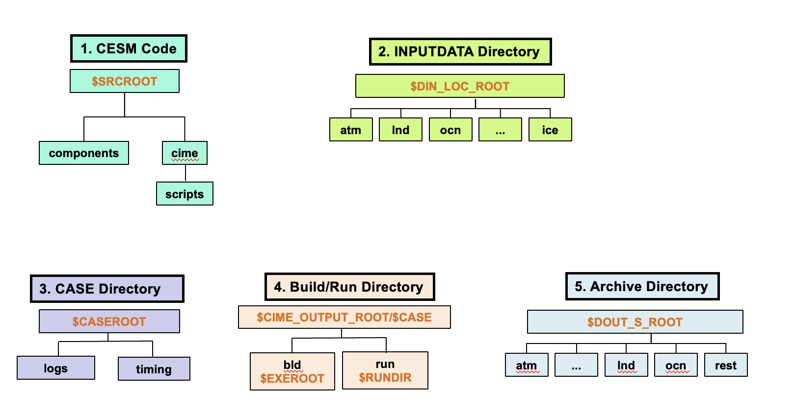
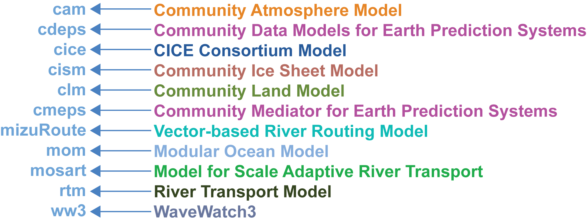

Explore CESM Code#
Now that you have downloaded CESM into your workspace, it is useful to become familiar with its directory structure. In this exercise, you will explore the main areas of the CESM source code and learn where key tools and model components are located.
Specifically, in this exercise we will:
Step 1. Locate your CESM source code directory (
$SRCROOT).Step 2. Examine the CIME Directory area.
Step 3. Examine the Model Components area.
Step 4. Take a closer look at the Community Atmosphere Model (CAM) Component Model.
For the current tutorial on derecho, the path to the CESM code is:
$SRCROOT = /glade/u/home/$USER/code/my_cesm_code

Figure: Detailed view of the CESM3 Code Directory
Step 1. Locate Your CESM Source Code Directory#
Before exploring the CESM source tree, let’s first determine where we are currently located in the file system and navigate to the CESM code directory ($SRCROOT) if we are not already there.
Open a terminal and determine your current working directory:
pwd
The expected output is:
/glade/u/home/$USER/code/my_cesm_code
If your output matches the path above, you are already in the CESM source code directory and can continue to the next step. (If you have not done anything since the last exercise then you will already be in the $SRCROOT location)
If your output is different, navigate to the CESM source code directory:
cd /glade/u/home/$USER/code/my_cesm_code
You are now located in your CESM source code workspace ($SRCROOT).
To see the contents of the directory, use:
ls -1
You should see several directories and files, including:
bin
ccs_config
ChangeLog
ChangeLog_template
cime
cime_config
components
describe_version
doc
libraries
LICENSE.txt
README.rst
share
tools
These directories form the top level of the CESM source tree and will be used throughout the remainder of the tutorial.
If your directory contents differ significantly from those shown above, ask for assistance before proceeding.
Step 2. Examine the CIME Directory#
One of the most important directories in CESM is the CIME directory.
The CIME(Common Infrastructure for Modeling the Earth) directory provides the framework that integrates the CESM component models and manages the workflow for configuring, building, and running simulations.
- Move into the CIME directory:
cd cime
List its contents:
ls -1
You should see several directories, including:
doc
scripts
tools
utils
The most important directory for many CESM users is the scripts directory, which contains the tools used to create and manage cases.
Change into the scripts directory:
cd scripts
List its contents:
ls -l
Notice the following scripts:
create_newcase
create_clone
create_test
query_config
query_testlists
Throughout this tutorial, create_newcase will be one of the most frequently used commands.
Check Your Understanding
What is the purpose of the create_newcase command?
Hint: It is used to create a new CESM experiment (or “case”) that can later be configured, built, and run.
Step 3. Examine the CESM Components Area#
In your terminal window, we will now move to the Components Directory and examine the contents of the individual sub models.

Figure: CESM3 Code Components
cd /glade/u/home/$USER/code/my_cesm_code
OR
Alternatively, you can use the cd ../.. to move up two levels in the directory hierarchy.
cd ../..
Change into the
componentsarea of the code workspace:
cd components
List the contents of the Components Directory:
ls -1
Expected Output:
cam
cdeps
cice
cism
clm
cmeps
mizuRoute
mom
mosart
rtm
ww3
Each directory contains the source code for a different Earth system component or supporting infrastructure:
Component |
Description |
|---|---|
CAM |
Community Atmosphere Model (atmosphere) |
CLM |
Community Land Model (land) |
MOM |
Modular Ocean Model (ocean) |
CICE |
CICE Consortium Model (sea ice) |
CISM |
Community Ice Sheet Model (land ice) |
MOSART |
Model for Scale Adaptive River Transport |
mizuRoute |
River routing model |
RTM |
Runoff Transport Model (legacy routing infrastructure) |
WW3 |
WaveWatch III (ocean waves) |
CMEPS |
Coupling infrastructure used to exchange information between component models |
CDEPS |
Data components used to provide prescribed atmosphere, ocean, land, ice, and other forcing datasets |
Together, these components represent the major elements of the Earth system. During a CESM simulation, information such as heat, moisture, momentum, runoff, and sea-ice state is exchanged between components through the coupling infrastructure provided by CMEPS. Together, these components represent the major elements of the Earth system. During a CESM simulation, information such as heat, moisture, momentum, runoff, and sea-ice state is exchanged between components through the coupling infrastructure provided by CMEPS.
Step 4. Look at the Community Atmosphere Model (CAM) Component Model#
As a final exercise, let’s take a quick look at the Community Atmosphere Model (CAM), which provides the atmospheric component of CESM.
Change into the CAM source directory:
cd cam
List the contents of the CAM Directory:
ls -l
Expected Output:
bin
bld
ccs_config
chem_proc
cime
cime_config
components
doc
libraries
LICENSE
manage_externals
README.md
share
src
test
tools
Several of these directories will become important as you begin working with CAM:
Directory |
Purpose |
|---|---|
|
Main CAM source code |
|
Atmospheric chemistry infrastructure |
|
CAM test cases and testing tools |
|
CAM documentation |
|
Utilities for development and analysis |
|
Build-related scripts and configuration files |
The src directory is where most scientific development takes place and is the area you will explore in later exercises.
Summary#
In this section, you:
Located the CESM source code directory (
$SRCROOT).Explored the CIME infrastructure used to create and manage CESM cases.
Examined the major CESM component models.
Explored the structure of the Community Atmosphere Model (CAM).
Understanding the CESM directory structure will make it easier to navigate the code, locate relevant files, and modify model components in future exercises.
Congratulations! You have completed the CESM code exploration exercise.